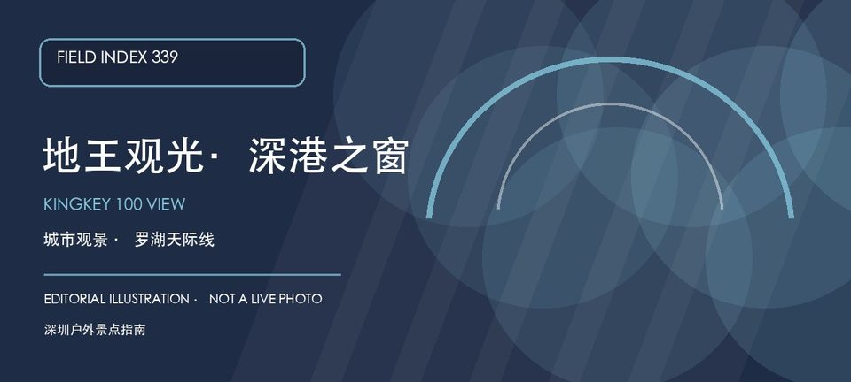
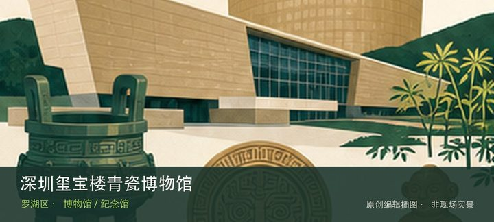

适合谁
适合首次来深、城市观察、亲子和雨天室内行程；对高处或能见度敏感者应保留替代路线。

SHENZHEN GUIDE · 339
罗湖区深南东路5002号地王大厦 · 城市观光
地王观光·深港之窗位于罗湖地王大厦，以高层城市观景、深圳与香港城市关系和室内展陈体验为主要看点，适合把老城区、口岸和城市天际线放在同一处观察。能见度和人流会显著影响体验，初访应先确认观景层开放、票务与预约安排，再根据天气决定是否把它作为整段城市漫游的终点。
WHY GO
适合首次来深、城市观察、亲子和雨天室内行程；对高处或能见度敏感者应保留替代路线。
出发前查看能见度、观景层开放和预约规则；先在观景层确定深圳、口岸与城市轴线，再把东门或老城步行安排在天气允许时。
公共交通先到罗湖区深南东路地王大厦片区，再按地王观光官方公开入口导航；出发前核对入口、安检、开放时段和返程站点。
自驾按地王大厦或周边正规停车场导航；车位、收费和社会车辆准入以现场公告为准，不在深南东路、消防通道和商场出入口临停。
秋冬和晴朗能见度高的日期更适合观景；高温、暴雨、雷电或雾霾导致能见度不足时，优先安排室内展陈并以官方公告为准。
NEARBY IDEAS

编辑配图·非现场实景深圳玺宝楼青瓷博物馆位于宝安南路，专题聚焦青瓷釉色、窑口与器形变化，适合把颜色之外的胎质、开片和烧造技术纳入观看。
 编辑配图·非现场实景
编辑配图·非现场实景
东江游击队指挥部旧址位于东门街道南庆街13号，旧址位于深圳墟历史核心区，可把抗战史展陈与东门片区的城市演变放在同一路线阅读。
 授权实景图
授权实景图
东门老街位于深圳老街片区，今日商业步行街覆盖了深圳墟的历史地层，街巷尺度、老字号与密集商业共同呈现城市从墟市成长的线索。